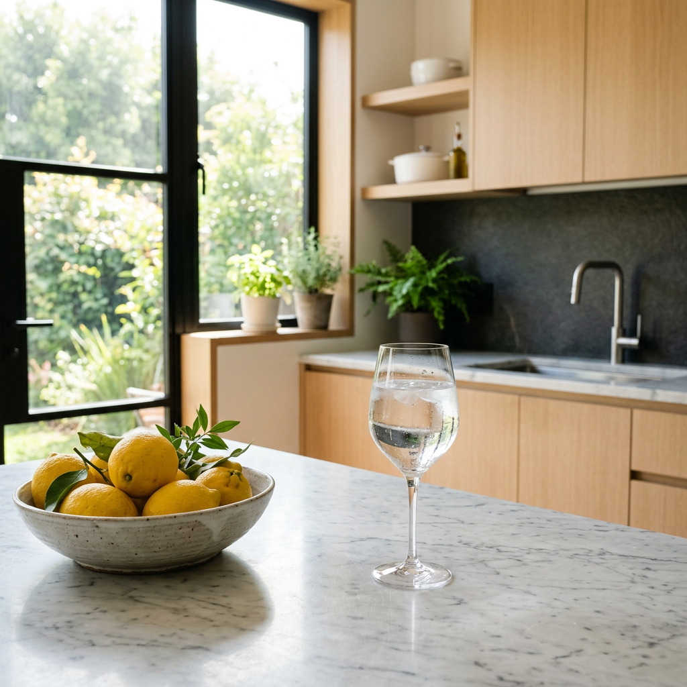
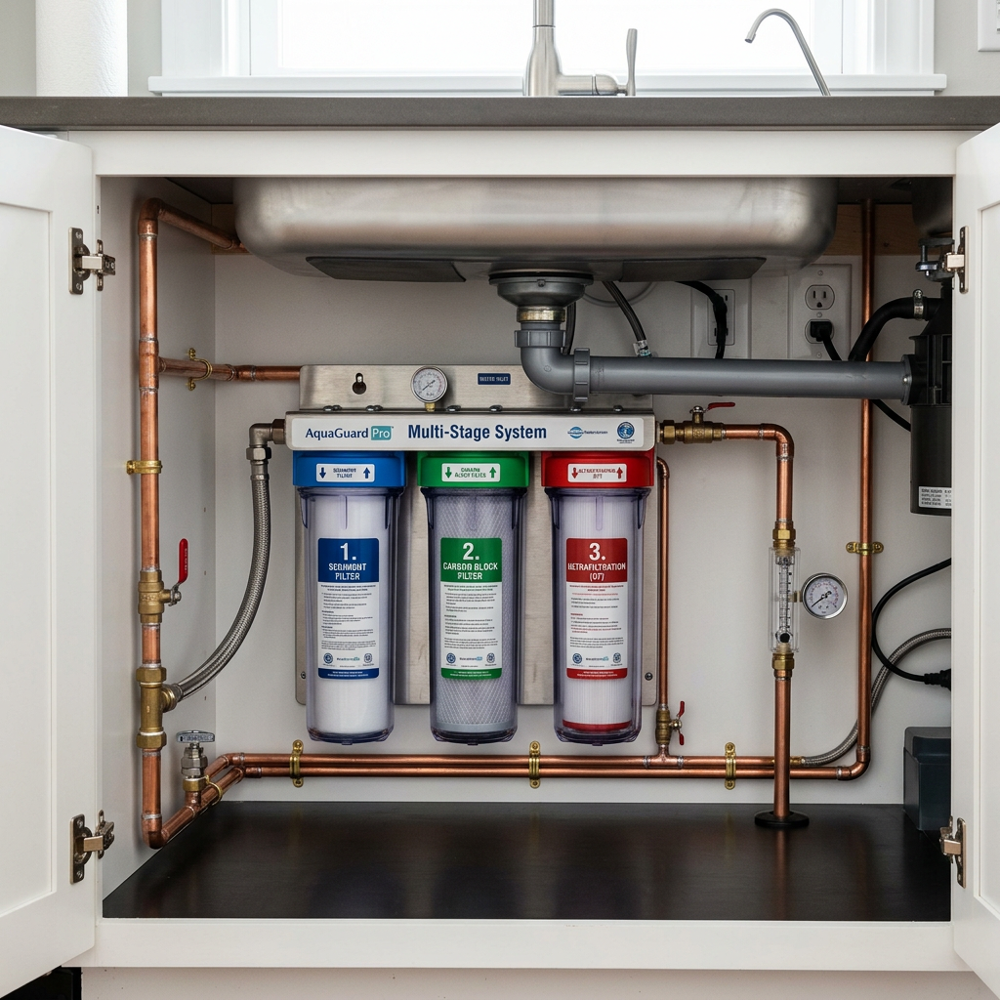
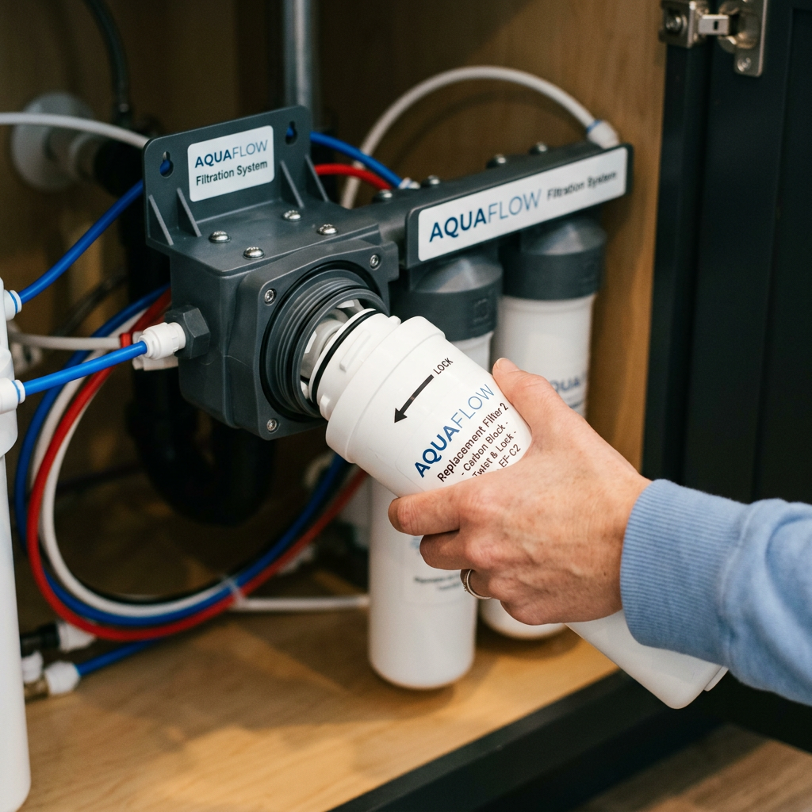

Best Alkaline Water Filter for Kitchen: Transform Your Home Hydration Today
Why You Need an Alkaline Water Filter for Kitchen Use
In the modern home, the quality of your tap water is more important than ever. While standard city water is treated for safety, it often lacks the vital minerals and pH balance your body craves. This is where an alkaline water filter for kitchen setups becomes a game-changer. By choosing an alkaline water filter for kitchen installation, you aren't just filtering out contaminants; you are actively enhancing the biological quality of your water.

An alkaline water filter for kitchen works by increasing the pH level of your tap water, typically bringing it from a neutral 7.0 to a more beneficial 8.5 or 9.5. This process involves adding essential minerals like calcium, magnesium, and potassium back into the water after the initial purification stage. When you invest in a high-quality alkaline water filter for kitchen, you are choosing a lifestyle of better hydration and long-term wellness.
The Health Benefits of an Alkaline Water Filter for Kitchen
The primary reason homeowners seek out an alkaline water filter for kitchen use is the health impact. Alkaline water is known for its antioxidant properties and its ability to neutralize acidity in the bloodstream. Regular consumption from your alkaline water filter for kitchen can lead to improved digestion, better skin health, and increased energy levels. Because the water produced by an alkaline water filter for kitchen contains smaller molecular clusters, it is absorbed more easily by your cells, leading to superior hydration compared to standard bottled or tap water.
Furthermore, an alkaline water filter for kitchen removes harmful heavy metals, chlorine, and fluoride. This ensures that every glass of water you pour from your alkaline water filter for kitchen is as pure as it is healthy. If you are serious about your family's health, an alkaline water filter for kitchen is an essential upgrade.
Click here to check priceComparing Standard Filters vs. Alkaline Water Filter for Kitchen
Not all filtration systems are created equal. Below is a comparison to help you understand why an alkaline water filter for kitchen is the superior choice for your home.
| Feature | Standard Carbon Filter | Alkaline Water Filter for Kitchen |
|---|---|---|
| pH Balancing | No | Yes (8.5 - 9.5 pH) |
| Mineral Retention | Low | High (Added Essential Minerals) |
| Antioxidant Potential | None | High (Negative ORP) |
| Contaminant Removal | Basic | Advanced (Multi-stage) |
| Taste Profile | Neutral | Crisp, Smooth, and Refreshing |

Key Features of the Best Alkaline Water Filter for Kitchen
When shopping for an alkaline water filter for kitchen, you need to look for specific features that guarantee performance. A top-tier alkaline water filter for kitchen should offer multi-stage filtration. The first stages of an alkaline water filter for kitchen usually focus on sediment and chlorine removal, while the final stages focus on mineralization and pH adjustment. Durability is also key; a reliable alkaline water filter for kitchen should have long-lasting cartridges that are easy to replace.
Another factor to consider is the flow rate. A high-quality alkaline water filter for kitchen will provide a steady stream of water without significant pressure drops. This makes using an alkaline water filter for kitchen convenient for cooking, filling large pots, and daily drinking. Most importantly, ensure the alkaline water filter for kitchen you choose is certified for safety and efficiency.
Installation and Maintenance of Your Alkaline Water Filter for Kitchen
One of the best things about a modern alkaline water filter for kitchen is the ease of installation. Most systems are designed for DIY enthusiasts and can be set up under the sink in less than an hour. Once your alkaline water filter for kitchen is installed, maintenance is minimal. Typically, you only need to change the filters in your alkaline water filter for kitchen every 6 to 12 months, depending on your usage levels.

Regularly maintaining your alkaline water filter for kitchen ensures that the pH levels remain consistent and the water stays free of impurities. By taking care of your alkaline water filter for kitchen, you guarantee a constant supply of mineral-rich, delicious water for years to come.
Conclusion: Upgrade to an Alkaline Water Filter for Kitchen Today
In conclusion, if you want the best for your health and your home, installing an alkaline water filter for kitchen is a clear choice. The benefits of superior hydration, mineral enrichment, and contaminant removal make the alkaline water filter for kitchen an invaluable tool for any health-conscious individual. Don't settle for basic tap water when you can have the refreshing taste and health-boosting properties of a premium alkaline water filter for kitchen.
Ready to transform your tap? Choose a high-performance alkaline water filter for kitchen today and feel the difference in every sip. An alkaline water filter for kitchen is more than just a filter; it's an investment in your future.
Click here to check price